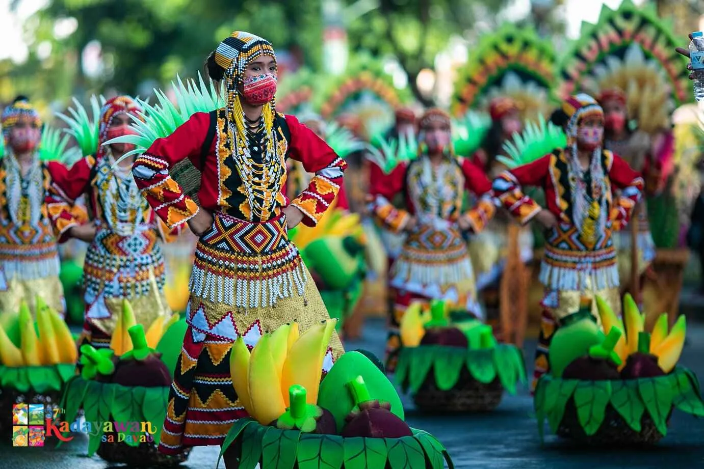

KADAYAWAN Festival
DESCRIPTION
Kadayawan is a celebration of bountiful harvest and cultural diversity. It honors the 11 indigenous tribes of Davao and the natural wealth of the region.
HISTORYIt started as a tribal ritual giving thanks for a good harvest. The word "Kadayawan" is derived from "madayaw," a Dabawenyo word for something valuable or beautiful.
